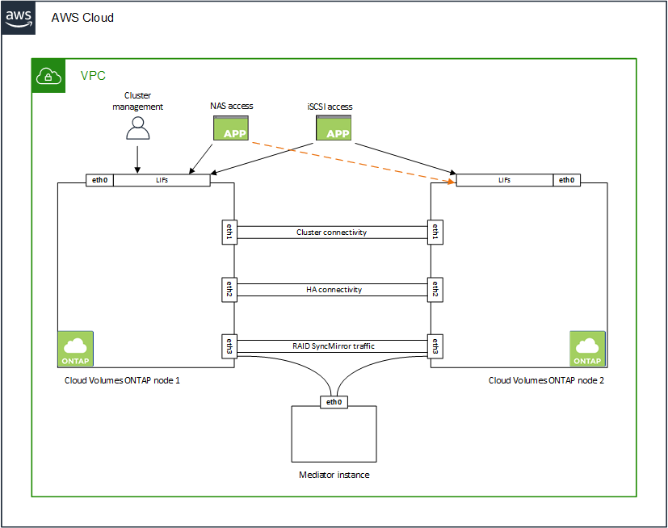

Amazon Web Services
Amazon Web Services
 Google Cloud
Google Cloud
 Microsoft Azure
Microsoft Azure
 Dokumentationsänderungen beantragen
Dokumentationsänderungen beantragen In GitHub bearbeiten
In GitHub bearbeiten Leitfaden für Beitragende
Leitfaden für BeitragendeNetzwerkanforderungen für Cloud Volumes ONTAP in AWS
Beitragende
BlueXP (früher Cloud Manager) übernimmt die Einrichtung von Netzwerkkomponenten für Cloud Volumes ONTAP, z. B. IP-Adressen, Netmasken und Routen. Sie müssen sicherstellen, dass Outbound-Internetzugang verfügbar ist, dass genügend private IP-Adressen verfügbar sind, dass die richtigen Verbindungen vorhanden sind und vieles mehr.
Allgemeine Anforderungen
Die folgenden Anforderungen müssen in AWS erfüllt sein.
Outbound-Internetzugang für Cloud Volumes ONTAP Nodes
Cloud Volumes ONTAP Nodes benötigen Outbound-Internetzugang für NetApp AutoSupport, der den Zustand Ihres Systems proaktiv überwacht und Meldungen an den technischen Support von NetApp sendet.
Routing- und Firewall-Richtlinien müssen HTTP-/HTTPS-Datenverkehr an die folgenden Endpunkte ermöglichen, damit Cloud Volumes ONTAP AutoSupport-Meldungen senden kann:
-
https://support.netapp.com/aods/asupmessage
-
https://support.netapp.com/asupprod/post/1.0/postAsup
Wenn Sie über eine NAT-Instanz verfügen, müssen Sie eine eingehende Sicherheitsgruppenregel definieren, die HTTPS-Datenverkehr vom privaten Subnetz zum Internet zulässt.
Wenn keine ausgehende Internetverbindung zum Senden von AutoSupport-Nachrichten verfügbar ist, konfiguriert BlueXP Ihre Cloud Volumes ONTAP-Systeme automatisch so, dass der Connector als Proxy-Server verwendet wird. Die einzige Anforderung besteht darin, sicherzustellen, dass die Sicherheitsgruppe des Connectors eingehende -Verbindungen über Port 3128 zulässt. Nach der Bereitstellung des Connectors müssen Sie diesen Port öffnen.
Wenn Sie strenge ausgehende Regeln für Cloud Volumes ONTAP definiert haben, müssen Sie auch sicherstellen, dass die Cloud Volumes ONTAP-Sicherheitsgruppe Outbound-Verbindungen über Port 3128 zulässt.
Nachdem Sie bestätigt haben, dass der ausgehende Internetzugang verfügbar ist, können Sie AutoSupport testen, um sicherzustellen, dass er Nachrichten senden kann. Anweisungen finden Sie unter "ONTAP Dokumentation: Einrichten von AutoSupport".
Wenn Sie von BlueXP darüber informiert werden, dass AutoSupport-Meldungen nicht gesendet werden können, "Fehler bei der AutoSupport Konfiguration beheben".
Outbound-Internetzugang für den HA Mediator
Die HA-Mediatorinstanz muss über eine ausgehende Verbindung zum AWS EC2-Service verfügen, damit sie beim Storage-Failover unterstützt werden kann. Um die Verbindung bereitzustellen, können Sie eine öffentliche IP-Adresse hinzufügen, einen Proxyserver angeben oder eine manuelle Option verwenden.
Die manuelle Option kann ein NAT-Gateway oder ein VPC-Endpunkt der Schnittstelle vom Ziel-Subnetz zum AWS EC2-Dienst sein. Details zu VPC-Endpunkten finden Sie unter "AWS Dokumentation: Interface VPC Endpunkte (AWS PrivateLink)".
Private IP-Adressen
BlueXP weist Cloud Volumes ONTAP automatisch die erforderliche Anzahl privater IP-Adressen zu. Sie müssen sicherstellen, dass Ihrem Netzwerk genügend private IP-Adressen zur Verfügung stehen.
Die Anzahl der LIFs, die BlueXP für Cloud Volumes ONTAP zuweist, hängt davon ab, ob Sie ein Single Node-System oder ein HA-Paar implementieren. Ein LIF ist eine IP-Adresse, die einem physischen Port zugewiesen ist.
IP-Adressen für ein Single Node-System
BlueXP weist einem System mit einem Knoten 6 IP-Adressen zu:
-
Cluster-Management-LIF
-
Node Management-LIF
-
Intercluster-LIF
-
LIF auf NAS-Daten
-
ISCSI-Daten-LIF
-
Storage-VM-Management-LIF
Ein Storage-VM-Management-LIF wird mit Managementtools wie SnapCenter verwendet.
IP-Adressen für HA-Paare
HA-Paare benötigen mehr IP-Adressen als ein System mit einem einzelnen Node. Diese IP-Adressen werden über verschiedene ethernet-Schnittstellen verteilt, wie im folgenden Bild dargestellt:

Die Anzahl der für ein HA-Paar erforderlichen privaten IP-Adressen hängt vom ausgewählten Implementierungsmodell ab. Ein in einer Single AWS Availability Zone (AZ) implementiertes HA-Paar benötigt 15 Private IP-Adressen, während ein in multiple AZS implementiertes HA-Paar 13 Private IP-Adressen erfordert.
Die folgenden Tabellen enthalten Details zu den LIFs, die mit den einzelnen privaten IP-Adressen verknüpft sind.
LIFs für HA-Paare in einer einzelnen Verfügbarkeitszone
| LIF | Schnittstelle | Knoten | Zweck |
|---|---|---|---|
Cluster-Management |
Eth0 |
Knoten 1 |
Administrative Verwaltung des gesamten Clusters (HA-Paar). |
Node-Management |
Eth0 |
Node 1 und Node 2 |
Administrationsmanagement eines Node |
Intercluster |
Eth0 |
Node 1 und Node 2 |
Cluster-übergreifende Kommunikation, Backup und Replizierung |
NAS-Daten |
Eth0 |
Knoten 1 |
Client-Zugriff über NAS-Protokolle. |
ISCSI-Daten |
Eth0 |
Node 1 und Node 2 |
Client-Zugriff über das iSCSI-Protokoll. Wird vom System auch für andere wichtige Netzwerk-Workflows eingesetzt. Diese LIFs sind erforderlich und sollten nicht gelöscht werden. |
Cluster-Konnektivität |
Eth1 |
Node 1 und Node 2 |
Ermöglicht die Kommunikation der Nodes und das Verschieben von Daten innerhalb des Clusters. |
HA-Konnektivität |
Eth2 |
Node 1 und Node 2 |
Kommunikation zwischen den beiden Knoten im Failover-Fall. |
RSM-iSCSI-Datenverkehr |
Eth3 |
Node 1 und Node 2 |
RAID SyncMirror iSCSI-Datenverkehr sowie die Kommunikation zwischen den beiden Cloud Volumes ONTAP-Nodes und dem Mediator. |
Mediator |
Eth0 |
Mediator |
Kommunikationskanal zwischen den Nodes und dem Mediator zur Unterstützung bei Storage-Takeover- und Giveback-Prozessen |
LIFs für HA-Paare in mehreren Verfügbarkeitszonen
| LIF | Schnittstelle | Knoten | Zweck |
|---|---|---|---|
Node-Management |
Eth0 |
Node 1 und Node 2 |
Administrationsmanagement eines Node |
Intercluster |
Eth0 |
Node 1 und Node 2 |
Cluster-übergreifende Kommunikation, Backup und Replizierung |
ISCSI-Daten |
Eth0 |
Node 1 und Node 2 |
Client-Zugriff über das iSCSI-Protokoll. Diese LIF managt zudem die Migration von Floating IP-Adressen zwischen Nodes. |
Cluster-Konnektivität |
Eth1 |
Node 1 und Node 2 |
Ermöglicht die Kommunikation der Nodes und das Verschieben von Daten innerhalb des Clusters. |
HA-Konnektivität |
Eth2 |
Node 1 und Node 2 |
Kommunikation zwischen den beiden Knoten im Failover-Fall. |
RSM-iSCSI-Datenverkehr |
Eth3 |
Node 1 und Node 2 |
RAID SyncMirror iSCSI-Datenverkehr sowie die Kommunikation zwischen den beiden Cloud Volumes ONTAP-Nodes und dem Mediator. |
Mediator |
Eth0 |
Mediator |
Kommunikationskanal zwischen den Nodes und dem Mediator zur Unterstützung bei Storage-Takeover- und Giveback-Prozessen |

|
Wenn eine Implementierung in mehreren Verfügbarkeitszonen erstellt wird, werden mehrere LIFs zugeordnet "Floating-IP-Adressen", Die nicht gegen die private IP-Beschränkung von AWS gezählt werden. |
Sicherheitsgruppen
Sie müssen keine Sicherheitsgruppen erstellen, weil BlueXP das für Sie tut. Wenn Sie Ihr eigenes verwenden müssen, lesen Sie "Regeln für Sicherheitsgruppen".
Verbindung für Daten-Tiering
Wenn Sie EBS als Performance-Tier und AWS S3 als Kapazitäts-Tier verwenden möchten, müssen Sie sicherstellen, dass Cloud Volumes ONTAP eine Verbindung zu S3 hat. Die beste Möglichkeit, diese Verbindung bereitzustellen, besteht darin, einen VPC-Endpunkt für den S3-Dienst zu erstellen. Anweisungen hierzu finden Sie unter "AWS Dokumentation: Erstellen eines Gateway-Endpunkts".
Wenn Sie den VPC-Endpunkt erstellen, wählen Sie die Region, den VPC und die Routing-Tabelle aus, die der Cloud Volumes ONTAP Instanz entspricht. Sie müssen auch die Sicherheitsgruppe ändern, um eine ausgehende HTTPS-Regel hinzuzufügen, die Datenverkehr zum S3-Endpunkt ermöglicht. Andernfalls kann Cloud Volumes ONTAP keine Verbindung zum S3-Service herstellen.
Informationen zu Problemen finden Sie unter "AWS Support Knowledge Center: Warum kann ich mich nicht über einen Gateway VPC Endpunkt mit einem S3-Bucket verbinden?"
Verbindungen zu ONTAP Systemen
Um Daten zwischen einem Cloud Volumes ONTAP System in AWS und ONTAP Systemen in anderen Netzwerken zu replizieren, müssen Sie eine VPN-Verbindung zwischen der AWS VPC und dem anderen Netzwerk herstellen, beispielsweise das Unternehmensnetzwerk. Anweisungen hierzu finden Sie unter "AWS Dokumentation: Einrichten einer AWS VPN-Verbindung".
DNS und Active Directory für CIFS
Wenn Sie CIFS-Storage bereitstellen möchten, müssen Sie DNS und Active Directory in AWS einrichten oder Ihre lokale Einrichtung auf AWS erweitern.
Der DNS-Server muss Namensauflösungsdienste für die Active Directory-Umgebung bereitstellen. Sie können DHCP-Optionssätze so konfigurieren, dass sie den Standard-EC2-DNS-Server verwenden, der nicht der von der Active Directory-Umgebung verwendete DNS-Server sein darf.
Anweisungen finden Sie unter "AWS Dokumentation: Active Directory Domain Services in der AWS Cloud: Quick Start Reference Deployment".
VPC-Sharing
Ab Version 9.11.1 werden Cloud Volumes ONTAP HA-Paare in AWS mit VPC-Sharing unterstützt. Die VPC-Freigabe ermöglicht Ihrem Unternehmen, Subnetze mit anderen AWS Konten gemeinsam zu nutzen. Um diese Konfiguration zu verwenden, müssen Sie Ihre AWS-Umgebung einrichten und dann das HA-Paar mithilfe der API implementieren.
Anforderungen für HA-Paare in mehreren Verfügbarkeitszonen
Zusätzliche AWS Netzwerkanforderungen gelten für Cloud Volumes ONTAP HA-Konfigurationen, die mehrere Verfügbarkeitszonen (AZS) verwenden. Sie sollten diese Anforderungen überprüfen, bevor Sie ein HA-Paar starten, da Sie beim Erstellen der Arbeitsumgebung die Netzwerkdetails in BlueXP eingeben müssen.
Informationen zur Funktionsweise von HA-Paaren finden Sie unter "Hochverfügbarkeitspaare".
- Verfügbarkeitszonen
-
Dieses HA-Bereitstellungsmodell verwendet mehrere AZS, um eine hohe Verfügbarkeit Ihrer Daten zu gewährleisten. Sie sollten für jede Cloud Volumes ONTAP Instanz und die Mediatorinstanz eine dedizierte AZ verwenden, die einen Kommunikationskanal zwischen dem HA-Paar bereitstellt.
In jeder Verfügbarkeitszone sollte ein Subnetz verfügbar sein.
- Fließende IP-Adressen für NAS- und Cluster-/SVM-Management
-
HA-Konfigurationen in mehreren Verfügbarkeitszonen verwenden fließende IP-Adressen, die bei einem Ausfall zwischen Nodes migriert werden. Außerhalb der VPC ist nicht nativ zugänglich. Es sei denn, Sie können darauf zugreifen "AWS Transit Gateway einrichten".
Eine Floating-IP-Adresse ist für das Cluster-Management, eine für NFS/CIFS-Daten auf Node 1 und eine für NFS/CIFS-Daten auf Node 2. Eine vierte Floating IP-Adresse für SVM-Management ist optional.

Wenn Sie SnapDrive für Windows oder SnapCenter mit dem HA-Paar verwenden, ist eine unverankerte IP-Adresse für die SVM-Management-LIF erforderlich. Sie müssen die unverankerten IP-Adressen in BlueXP eingeben, wenn Sie eine Arbeitsumgebung mit Cloud Volumes ONTAP HA erstellen. BlueXP weist dem HA-Paar die IP-Adressen zu, wenn das System gestartet wird.
Die fließenden IP-Adressen müssen sich für alle VPCs in der AWS Region, in der Sie die HA-Konfiguration implementieren, außerhalb der CIDR-Blöcke befinden. Stellen Sie sich die fließenden IP-Adressen als logisches Subnetz vor, das sich außerhalb der VPCs in Ihrer Region befindet.
Das folgende Beispiel zeigt die Beziehung zwischen Floating-IP-Adressen und den VPCs in einer AWS-Region. Während sich die fließenden IP-Adressen für alle VPCs außerhalb der CIDR-Blöcke befinden, sind sie über Routing-Tabellen in Subnetze routingfähig.

BlueXP erstellt automatisch statische IP-Adressen für den iSCSI-Zugriff und für NAS-Zugriff von Clients außerhalb der VPC. Für diese Art von IP-Adressen müssen Sie keine Anforderungen erfüllen. - Transit-Gateway zur Aktivierung des Floating IP-Zugriffs von außerhalb der VPC
-
Bei Bedarf "AWS Transit Gateway einrichten" Um den Zugriff auf die unverankerten IP-Adressen eines HA-Paars von außerhalb der VPC zu ermöglichen, in der sich das HA-Paar befindet.
- Routentabellen
-
Nachdem Sie in BlueXP die unverankerten IP-Adressen angegeben haben, werden Sie dann aufgefordert, die Routingtabellen auszuwählen, die Routen zu den unverankerten IP-Adressen enthalten sollen. Dies ermöglicht den Client-Zugriff auf das HA-Paar.
Wenn Sie nur eine Routingtabelle für die Subnetze in Ihrem VPC (der Hauptroutingtabelle) haben, fügt BlueXP automatisch die fließenden IP-Adressen zu dieser Routingtabelle hinzu. Wenn Sie mehr als eine Routing-Tabelle haben, ist es sehr wichtig, beim Starten des HA-Paars die richtigen Routing-Tabellen auszuwählen. Andernfalls haben einige Clients möglicherweise keinen Zugriff auf Cloud Volumes ONTAP.
Sie können beispielsweise zwei Subnetze haben, die mit verschiedenen Routing-Tabellen verknüpft sind. Wenn Sie Routing-Tabelle A auswählen, jedoch nicht Route-Tabelle B, können Clients in der mit Routing-Tabelle A verknüpften Subnetz auf das HA-Paar zugreifen, die Clients im Subnetz der Routing-Tabelle B können jedoch nicht.
Weitere Informationen zu Routingtabellen finden Sie unter "AWS Documentation: Routingtabellen".
- Anbindung an NetApp Management Tools
-
Für den Einsatz von NetApp Management Tools mit HA-Konfigurationen in mehreren Verfügbarkeitszonen stehen zwei Verbindungsoptionen zur Verfügung:
-
Die NetApp Management Tools in einer anderen VPC und implementieren "AWS Transit Gateway einrichten". Das Gateway ermöglicht den Zugriff auf die unverankerte IP-Adresse für die Cluster-Managementoberfläche von außerhalb der VPC aus.
-
Implementieren Sie die NetApp Management-Tools in derselben VPC mit einer ähnlichen Routing-Konfiguration wie NAS-Clients.
-
Beispiel für eine HA-Konfiguration
Das folgende Bild zeigt die Netzwerkkomponenten, die für ein HA-Paar in mehreren Verfügbarkeitszonen spezifisch sind: Drei Verfügbarkeitszonen, drei Subnetze, fließende IP-Adressen und eine Routingtabelle.

Anforderungen an den Steckverbinder
Richten Sie Ihr Netzwerk ein, damit der Connector Ressourcen und Prozesse in Ihrer Public Cloud-Umgebung managen kann. Der wichtigste Schritt besteht darin, ausgehenden Internetzugriff auf verschiedene Endpunkte zu gewährleisten.
|
|
Wenn Ihr Netzwerk für die gesamte Kommunikation mit dem Internet einen Proxyserver verwendet, können Sie den Proxyserver über die Seite Einstellungen angeben. Siehe "Konfigurieren des Connectors für die Verwendung eines Proxy-Servers". |
Verbindung zu Zielnetzwerken
Für einen Connector ist eine Netzwerkverbindung zu den VPCs und VNets erforderlich, in denen Cloud Volumes ONTAP bereitgestellt werden soll.
Wenn Sie beispielsweise einen Connector in Ihrem Unternehmensnetzwerk installieren, müssen Sie eine VPN-Verbindung zur VPC oder vnet einrichten, in der Sie Cloud Volumes ONTAP starten.
Outbound-Internetzugang
Für den Connector ist ein abgehender Internetzugang erforderlich, um Ressourcen und Prozesse in Ihrer Public Cloud-Umgebung zu managen.
| Endpunkte | Zweck |
|---|---|
https://support.netapp.com |
Um Lizenzinformationen zu erhalten und AutoSupport Meldungen an den NetApp Support zu senden. |
https://*.cloudmanager.cloud.netapp.com https://cloudmanager.cloud.netapp.com |
Um SaaS-Funktionen und -Services in BlueXP zur Verfügung zu stellen. |
https://cloudmanagerinfraprod.azurecr.io https://*.blob.core.windows.net |
Aktualisierung des Connectors und seiner Docker Komponenten. |